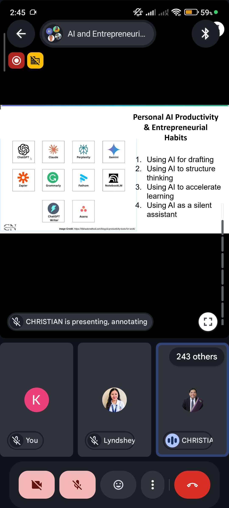
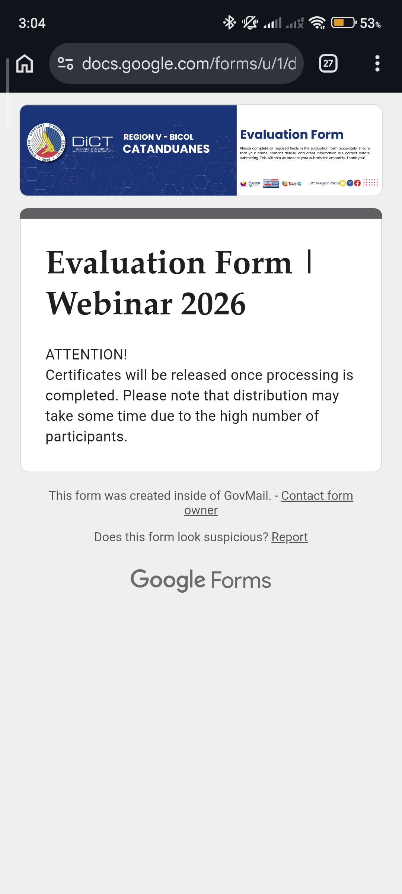

On September 9, 2026, I attended a virtual webinar titled "AI and Entrepreneurship," facilitated by Christian Narito over Google Meet, drawing over two hundred participants for a session on how AI intersects with entrepreneurial practice.
AI's real value lies not in replacing entrepreneurial judgment, but in amplifying it.
The speaker opened by framing AI not as a way to work harder but as a source of leverage, using the image of Archimedes and his lever to argue that productivity is about maximizing leverage rather than effort, with AI acting as a force multiplier rather than a replacement for human labor. He then cautioned against overconfidence through the Dunning-Kruger Effect, reminding participants that limited familiarity with AI can easily be mistaken for mastery. From there, he outlined the modern AI toolstack, dividing it into generative text tools like ChatGPT and Claude, visual and media tools like Midjourney, and analytical AI used for forecasting and customer segmentation.
Much of the session focused on practical application. Narito introduced ideation techniques such as SCAMPER prompting, persona simulation, and niche exploration, along with a simple prompting formula of role, context, constraint, and output format, which he said could turn AI into an instant critic capable of surfacing blind spots in seconds. A case study showed dramatic time savings from AI use in market research, feature brainstorming, and copywriting, while another highlighted efficiency gains of sixty to eighty-five percent across the stages of idea validation, prototyping, customer acquisition, and scaling. He also discussed how AI can free up founders' time by handling email drafting, administrative paperwork, and content repurposing, and addressed common barriers to adoption, such as fear of AI replacing human judgment, gaps in prompting skills, and the need for ethical guardrails.
To help organizations get started, he proposed a four-week roadmap: auditing daily tasks, experimenting with a few tools, automating repeatable workflows, and finally scaling AI use across the team. He paired this with four ethical principles: never upload confidential data, always review AI outputs, use AI to support human dignity rather than laziness, and keep accountability with the human user. He closed by sharing his own personal toolkit and reminding attendees that AI responds to clarity, not intelligence, returning to the basic formula of role, task, context, and output.
Overall, the webinar offered a practical, well-rounded look at integrating AI into entrepreneurship, blending mindset shifts, hands-on techniques, measurable case studies, and ethical guardrails into a coherent message.
AI works best as leverage, not effort — a force multiplier for entrepreneurial judgment rather than a replacement for it.
A simple prompting formula — role, context, constraint, output format — turns AI into a practical tool for ideation, critique, and everyday admin work.
Responsible adoption follows a four-week roadmap (audit, experiment, automate, scale) guided by four ethics rules: no confidential data, always review outputs, support human dignity, and keep accountability human.